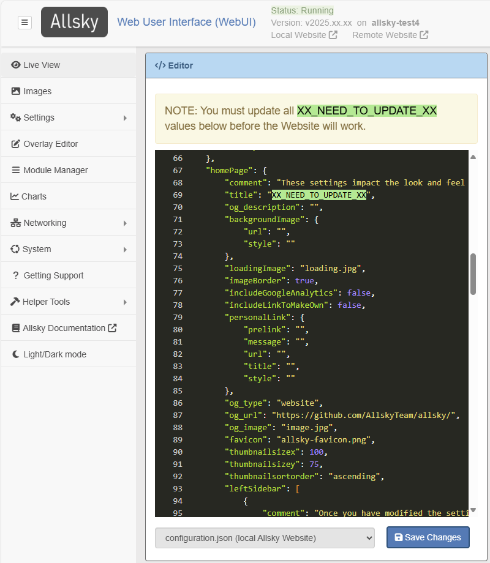

The WebUI's Editor page allows editing Allsky configuration files. Items in the editor window are color-coded depending on what they are.
HINT: The Editor accepts CTRL-Z to undo actions.
A typical view of a JSON file being edited is below, followed by a description of the color scheme.
{kind=link}
Color scheme
- Setting names look different depending on the file type:
- In .json files they look likeThis. Settings names MUST be enclosed in double quotes, but quotes around them are omitted in the Allsky documentation for readability.
- Colors for setting values vary based on value's type:
- Text (anything surrounded by quotes): "sample text". Note that a number surrounded by quotes like "41.79" is treated as text and is confusing to people looking at the value. If a value is supposed to be a number, don't add quotes.
- Numbers (when not quoted): 41.79, -88.1.
- Booleans (when not quoted): true, false.
- Special characters: { } : , =
- JSON brackets: [ ]
Problems in the file
If there's a formatting error in the file a small red "x" will appear to the left of
a the line number.
Hover your cursor over it to see the error.
In the example below, a comma is missing from the end of line 37.
The message is somewhat cryptic but is telling you it was expecting to see
one of the listed characters at the end of the line.
You will not be able to save the file until all errors are resolved.
If the page doesn't indicate there's an error but you get an error when you try to view the page, check if the colors on the page are different than what was described above. The most common errors are below:
- In JSON files:
- Missing commas
are needed after each value except the last one in a sub-section.
{
"setting1" : "value 1" < missing comma
"setting2" : "value 2" < last entry, no comma needed
} - Missing quotes
- setting names and string values must be surrounded by double quotes.
setting1:"value 1" < missing quotes around name - Missing colons - one must separate each setting name from its value. There can be 0 or more spaces before and/or after the colon. setting1 "value 1" < missing colon
- Missing commas
are needed after each value except the last one in a sub-section.